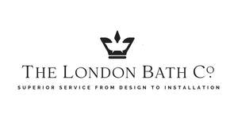

Trade Mark Journal No.2025/015 11 April 2025
UK00004180469 27 March 2025 (11,20,35,37,42)

- Class 11
- Sanitary and bathroom installations and plumbing fixtures; toilets; water supply and sanitation equipment; showers; taps; radiators; hand dryers; electric heating apparatus; immersion heaters; water heaters; taps; showers; baths; bath fittings; bath and shower screens; hand basins; fittings for basins; kitchen sinks; heated towel rails; lighting apparatus and installations; apparatus for heating; apparatus for steam generating; apparatus for cooking; apparatus for refrigerating; apparatus for drying; apparatus for ventilating; food and beverage cooking, heating, cooling and treatment equipment; coffee makers; water purification, desalination and conditioning installations; parts and fittings for the aforesaid goods.
- Class 20
- Furniture; kitchen furniture; bathroom furniture; mirrors; kitchen units; counter tops; cupboards; tables; chairs; storage units [furniture]; parts and fittings for the aforesaid goods.
- Class 35
- Advertising, marketing and sales promotions; online ordering services; retail services and wholesale services connected with the sale of sanitary and bathroom installations and plumbing fixtures, toilets, water supply and sanitation equipment, showers, taps, radiators, hand dryers, electric heating apparatus, immersion heaters, water heaters, taps, showers, baths, bath fittings, bath and shower screens, hand basins, fittings for basins, kitchen sinks, heated towel rails, lighting apparatus and installations, apparatus for heating, apparatus for steam generating, apparatus for cooking, apparatus for refrigerating, apparatus for drying, apparatus for ventilating, food and beverage cooking, heating, cooling and treatment equipment, coffee makers, water purification, desalination and conditioning installations, furniture, kitchen furniture, bathroom furniture, mirrors, kitchen units, counter tops, cupboards, tables, chairs, storage units [furniture], parts and fittings for the aforesaid goods; consultancy, information and advisory services to all the aforesaid services.
- Class 37
- Plumbing services; plumbing installation, maintenance and repair; furniture installation, maintenance, renovation and repair; installation, maintenance, renovation and repair of kitchens; services of electricians; carpentry services; HVAC (heating, ventilation and air conditioning) installation, maintenance and repair; construction; building; property maintenance; onsite building project management; machinery installation, maintenance and repair; repair services for domestic electrical and electronic appliances; consultancy, information and advisory services to all the aforesaid services.
- Class 42
- Bathroom design services; design of bathrooms; design services; planning (design) of bathrooms; design services relating to the installation of baths; kitchens design services; interior design; information, consultancy and advisory services relating to all the aforesaid services.
TLBC HOLDINGS LTD
Representative: Trademark Eagle Limited